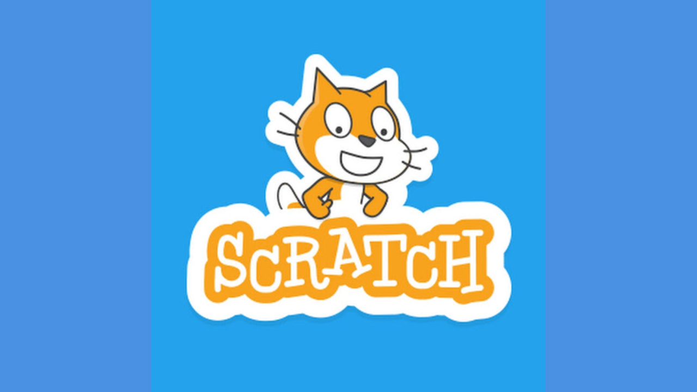
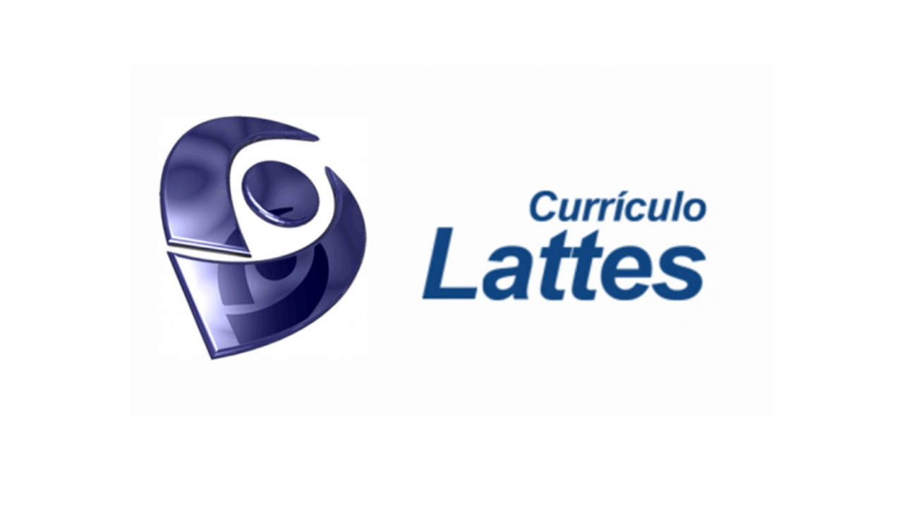

FERRAMENTAS

O Scratch enquanto conceito é uma linguagem de programação visual baseada em blocos, já a ferramenta em questão
ajuda os jovens a aprender a pensar criativamente, raciocinar sistematicamente, e trabalhar em grupo. Nele
é possível programar seus próprios jogos, animações e histórias interativas e compartilhar suas criações com outras pessoas na comunidade on-line.

A Plataforma Lattes atua na integração de bases de dados de Currículos,
de Grupos de pesquisa e de Instituições em um único Sistema de Informações.
O Currículo Lattes se tornou um padrão nacional no registro da vida pregressa e atual dos estudantes
e é hoje adotado pela maioria das instituições de fomento, universidades e institutos de pesquisa do País.

O Tinkercad é uma coleção on-line gratuita de ferramentas de software com o intuito de ajudar as pessoas de todo o mundo a pensar, criar e produzir.
Nele são realizados design de modelos 3D em CAD e também de simulação de circuitos elétricos analógicos e digitais através da prototipagem de projetos que virão a ser de fato implementados.